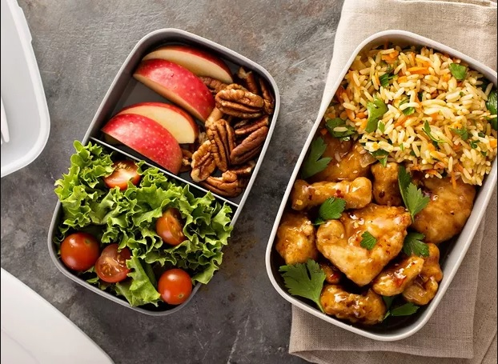

Vamos falar de comida? Toda substância utilizada pelos seres vivos como fonte de matéria e energia para poderem realizar as suas funções vitais, incluindo o crescimento, movimento e reprodução. Para o ser-humano, a alimentação inclui, ainda, várias substâncias que não são necessárias para as funções biológicas mas que fazem parte da cultura, como compostos químicos psicotrópicos, temperos, corantes e conservantes usados nos alimentos, mas que podem fazer bem aos seres humanos.
O que fazer de desejum? Almoço? Jantar? e muito mais....
 Video favorito